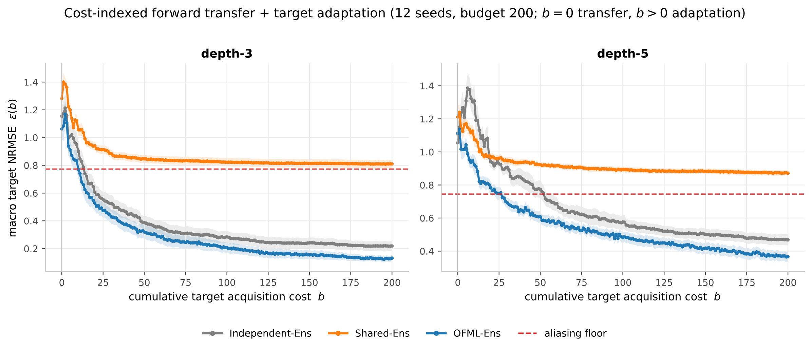
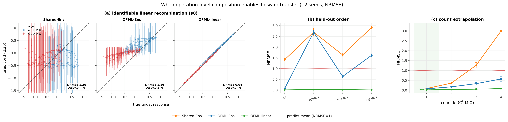

Experiments
端末観測のみの OFML は、プロトコルを共有された操作写像の合成として学習し、それらの写像が端末観測から識別可能であるときゼロショット転移できる。同じ端末観測のみという制約は内在的な失敗モード（未知操作・意味論シフト・誤特定読み出し・target のみの高次相互作用）も露呈させる。target の能動学習が閉ループ補正を与えるが、ランダムに対するサンプル効率上の優位はボトルネック（被覆か容量か）に依存する。最後に、観測器を通じて学習中に中間状態を記録すること — 操作出力の部分集合であっても — はこれらの限界を修復し、それを活用できるのはプロトコル合成的な代理モデルのみである。
合成表現に加え、再利用する操作の識別可能性とモデル特定が揃うとき、terminal-only でも未知 target へゼロショット転移する。破れれば失敗し、中間観測で条件を回復できる。
b=0 で識別が破れても、target 終端を能動観測すれば誤差は床を割り、合成的 OFML は非構造ベースラインより速く適応する。
中心結果
実験全体を束ねる中心結果。target ラベルの累積取得コスト \(b\) に対するマクロ NRMSE 曲線が、\(b=0\) の順方向転移（主張 1）・\(b>0\) の能動適応（主張 2）・張り付き水準＝記述子エイリアシング床（terminal-only 限界、主張 1）を 1 枚で示す。3 モデル（Independent-Ens / Shared-Ens / OFML-Ens）を同一の均衡 Sobol スケジュールで比較（12 bench seed、予算 200、全指標 NRMSE）。

0 適応・エイリアシング床"/>Experimental setting
2 つの操作意味論ファミリを用いる。線形ファミリは面積保存アフィン操作＋線形読み出し（\(A\)=rot 40°、\(B\)=x-shear、\(C\)=座標入れ替え、\(D\)=rot −35°（\(s1\) のみ）、\(M\)=rot 25°、読み出し \(y=1.1s_0-0.7s_1+0.2\)）で、OFML-linear が容量一致モデル。非線形ファミリは sigmoid/tanh 操作＋非線形読み出し（ベース読み出しに高周波項 \(+0.25\sin(2\pi(s_0-s_1))\) を持ち、分布内でも既約な難易度下限を抱える）。語彙は \(\{A,B,C,D,M\}\)＋観測器 \(O\)。共通 source ＝ 9 プロトコル（単体＋両順序の全ペア：AMO, BMO, CMO, ABMO, BAMO, ACMO, CAMO, BCMO, CBMO）。プロトコルごとに学習入力 30 点（ノイズ \(\sigma=0.02\)）、ノイズなしテスト入力 120 点、3 シード。各シナリオは独立した転移設定であり、RMSE はシナリオ内（モデル間）で比較可能、シナリオ間では比較できない。
| シナリオ | ストレッサ | 実現 |
|---|---|---|
| s0 success | 分布内の合成 | target ＝ 未見の三つ組 ABC M O, CBA M O |
| s1 unknown-op | 未見の操作 | target が \(D\)（source に不在）を使用 |
| s2 semantics-shift | テスト意味論が異なる | source=base、target=shifted 系 |
| s3 input-extrap | テスト入力がサポート外 | source \(x\in[0,0.5]^2\)、target \(x\in[0.55,1]^2\) |
| s4 missing-probe | ソース文脈が少ない | source 集合を削減 |
| s5 lipschitz | ダイナミクス増幅 | high-gain / nonlinear_lipschitz |
| s6 misspec | フィット不能な読み出し | +高周波項 / nonlinear_misspecified |
| s7 three-body | \(\{A,B,C\}\) 全出現時のみの相互作用 | +存在ゲート付き \(s_0 s_1\) 項（ペア source では未見） |
| 手法 | 利用する構造 | モデル | 不確実性 |
|---|---|---|---|
| Prot-GP | プロトコル同一性 | プロトコルごとの RBF-GP | GP 事後 |
| Pooled-GP | 操作カウント | \([x,\text{count}(A..O),\text{variant}]\) 上の RBF-GP | GP 事後 |
| Shared-Ens | 操作カウント | 同一特徴上の 5-member MLP アンサンブル | ばらつき |
| OFML-MCD | 合成 | 合成ネット, MC-dropout, BO 選択 | dropout |
| OFML-Ens | 合成 | 合成ネット, 5-member 深層アンサンブル, BO 選択 | ばらつき |
| OFML-BNN | 合成 | 操作ごと tanh-MLP, HMC, \(d\)=5, h=16 | 事後 |
| OFML-GPN | 合成 | 操作ごとランダム特徴 GP(L=24), HMC, \(d\)=5 | 事後 |
| OFML-linear | 合成・線形操作 | 操作ごとに学習した行列, \(d\)=2（一致） | 再起動ばらつき |
| OFML-nonlinear | 合成・容量一致 | 合成 ReLU ネット, \(d\)=2, h=32 | ばらつき |
BO は頭打ちになる：非線形ファミリでは \(s0\) 検証 RMSE が 452〜\(10^5\) パラメータで ≈0.21–0.24 にとどまり（容量に非感応的）、これは容量不足ではなく端末観測のみに固有の識別可能性の下限と整合する。
プロトコルを共有操作モジュールの合成として扱い、再利用する操作が識別可能でモデルが正しく特定されるとき、terminal-only でも未知 target へゼロショット転移する。条件が破れれば失敗し、学習時の中間観測で条件を回復できる。

OFML-linear は held-out target を近完全に回復（NRMSE 0.04）、順序/count 盲の Shared-Ens（1.30）・合成ネット OFML-Ens（1.16）はエイリアシング平均を予測。(b) held-out order：識別可能な合成モデルのみが未知順序で低誤差。(c) count 外挿 \(C^k M O\)：識別済みモジュールは反復に再適用できる。各パネルの詳細は下の 図 3a／図 3b／図 3c。検証： 端末 \(y\) のみで学習し、未知プロトコルをゼロショット予測できるか？
結果（NRMSE）： 容量一致 OFML-linear が \(s0\) を 0.042 で近完全に再結合、順序盲 Shared-Ens は 1.300（エイリアシング平均）、OFML-Ens 1.158。
検証： 操作数が同じで順序だけ異なる未知順序へ転移できるか？
結果（NRMSE）： OFML-linear のみ全 held-out 順序で低い（macro 0.017）、OFML-Ens 1.256・Shared-Ens 2.169 は順序盲で失敗。
検証： 訓練で高々 1 回の操作を \(k\) 回反復して外挿できるか？
結果（NRMSE）： OFML-linear は \(k\)=4 でも 0.082、Shared-Ens は count 盲で 1.983 へ発散。
検証： 真の \(\theta\) での rank 関係 \(r^{\mathrm{id}}\) が転移成否を予言するか？
結果： s0 \(r^{\mathrm{id}}=0\)→転移成功（0.04）、s1 \(r^{\mathrm{id}}=0.414\)・s4 \(r^{\mathrm{id}}=0.167, K=178\)→失敗。命題 4 の rank 条件を数値化。
実験ページへ →検証： C1 語彙・C2 意味論・C3 被覆・C4 識別・C5 安定・C6 実現可能の各失敗はゼロショットで回復できるか？
結果（NRMSE）： s1 は全モデル失敗（1.4–1.5）、s3 被覆は OFML-linear 0.213 まで回復、s4 は条件数大で OFML-linear が悪化(1.805)。全 s0–s7 の 8 モデルグリッド(S1)を併載。
検証： 学習中の中間観測は非線形 \(s0\) を改善するか？誰が使えるか？
結果（NRMSE）： 合成 OFML はブラックボックスを追い抜く（OFML-nonlinear 0.579→0.401、単一 \(\{M\}\) で 0.214）。Pooled-GP は同じ観測でも改善せず 0.335→0.374。
検証： 中間観測は、端末読み出しでは解けない線形 order を識別可能にするか？
結果（RMSE）： 柔軟な OFML が 0.44→0.09（設計上識別可能な OFML-linear の 0.002 に接近）。count 記述子は横ばい（1.07）。
検証： 非線形 order でも中間観測は効くか？最小限の観測は何か？
結果（RMSE）： 合成 OFML が改善（OFML-BNN 0.65→0.17）。単一操作型の観測で到達。Shared-Ens は横ばい 1.14、誤特定線形は恩恵なし。
検証： 中間観測下で反復 \(C^k\) の発散をどう防ぐか？
結果（RMSE, \(k\)=4）： \(\{A,M\}\) 観測で発散抑制（OFML-linear 0.01→0.00、Shared-Ens 0.24→0.15）。ブラックボックスは横ばい 0.22。原因はゲージ→Lipschitz>1。
b=0 で識別が破れても、target 終端を直接能動観測すれば誤差は床を割る。合成的 OFML は構造の優位で no-sharing ベースラインより速く適応し、情報獲得（MaxVar/IVR）がランダムに勝つ。
再現性と理論
図 2 の正式 run は 144 records、図 3・表 1 は 684 records で失敗 run なし。全アンサンブルは seed-only に統一し、target test labels を学習・アーキテクチャ選択・参照構成に使わない。図 2 の test / pool / reference / 構造スケジュールは互いに素な Sobol ストリームから生成し、pilot と formal results を分離した。図・表は raw JSON から直接描画・出力し、注記の数値もファイルから読む。
Discussion
継続的な surrogate 性能を 1 本のコスト指標曲線で測る。\(b=0\) は転移、\(b>0\) は適応。\(\bar J(B)\) は両者を統合するが曲線交差を隠しうるので \(\varepsilon(0)\) と \(\varepsilon(B)\) も併記する。depth-5 では Independent-Ens の初期値がわずかに良い一方、OFML の AULC と終点誤差が小さい — 転移と適応を別々に測る必要性を示す。
定理 2 の correct posterior はデータ生成モデルと条件付き分布の正しい特定を意味する。deep ensemble や finite-particle SMC は一般に exact posterior ではない。したがって獲得の失敗は realizability・局所被覆・target-relevant identifiability・posterior 計算・joint covariance・仮想更新のいずれにも起因しうる。
本稿は target protocols のみを query し、全実行コストを 1、observer を単一終端チャネルに固定した。実験科学では protocol ごとに試薬量・装置占有時間・失敗リスクが異なる。ここでのコスト指標曲線は非一様コスト問題の基準系であり、source/bridge/target の同時選択、非一様コスト \(c(p,x,q)\)、多観測器・中間測定を action に含める拡張が自然な次段階である。